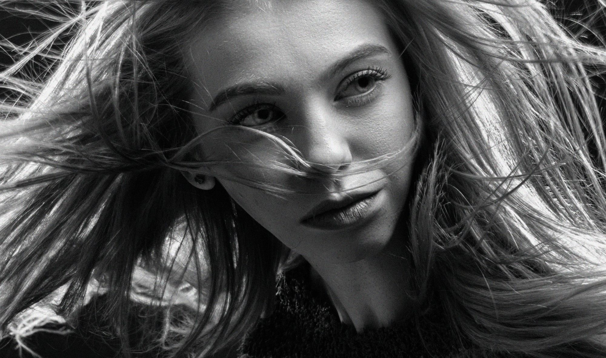
The art of
being human.
Portraits, families, and the quiet moments in between.
Photography that feels like you.
Selected moments.
View gallery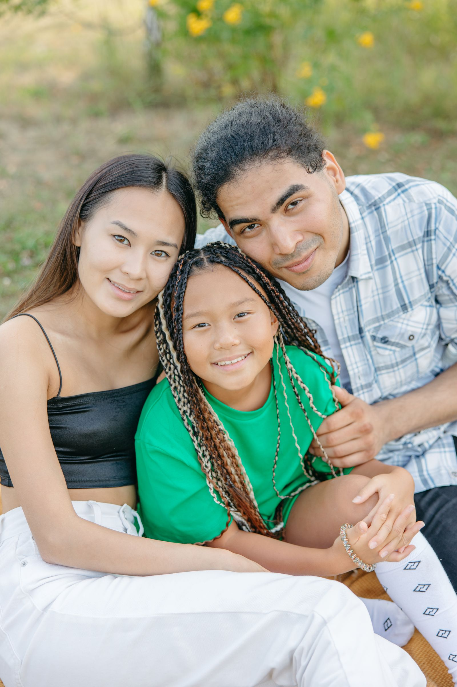
FamilyHeld close
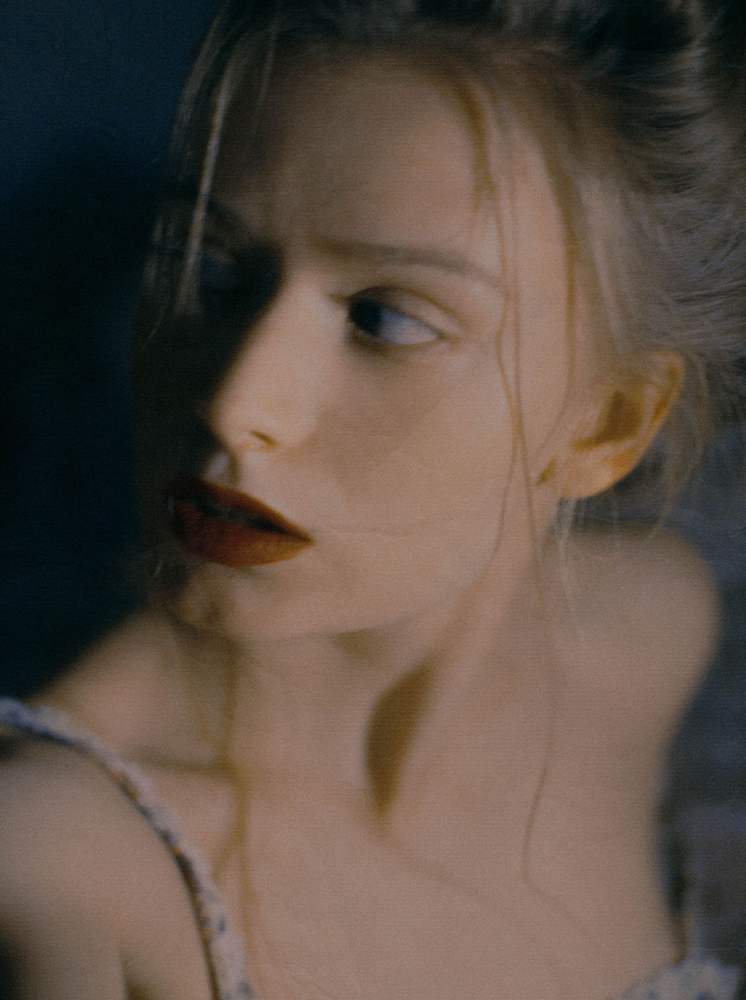
PortraitsCharacter in Light
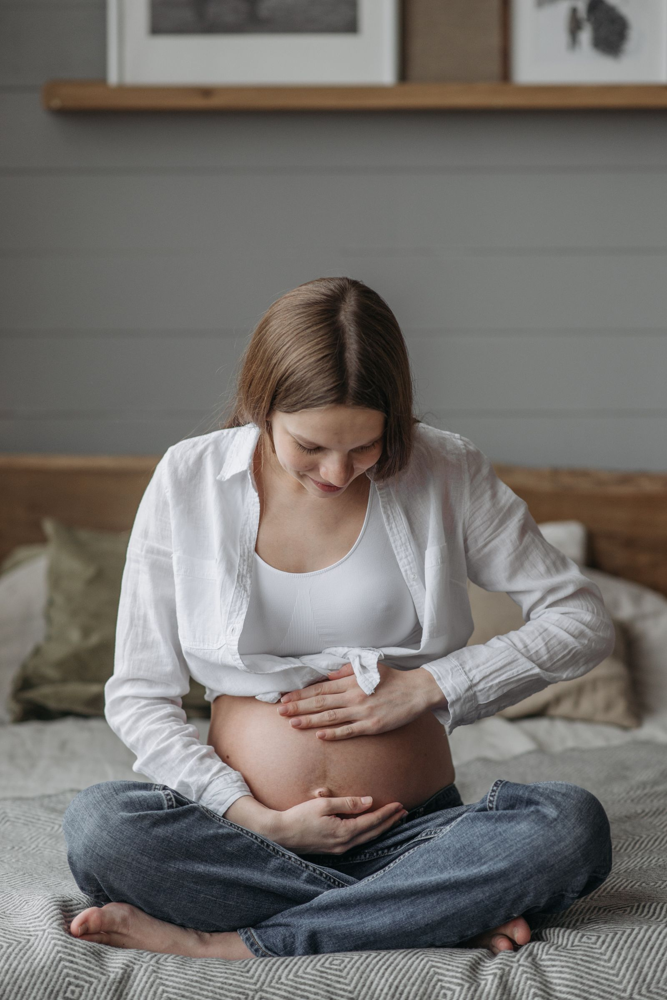
MaternityIn anticipation
A face. A gesture.
A point of view.
Different faces, different ways of meeting the lens. A contact sheet of direct gazes, soft light and considered expression.
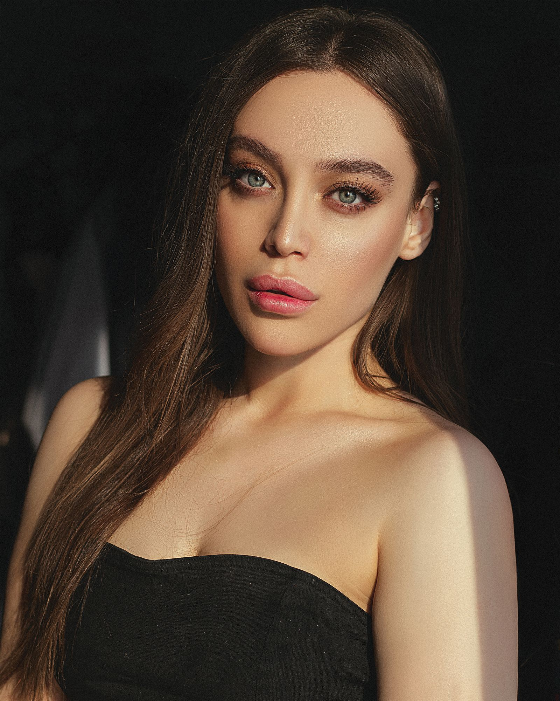
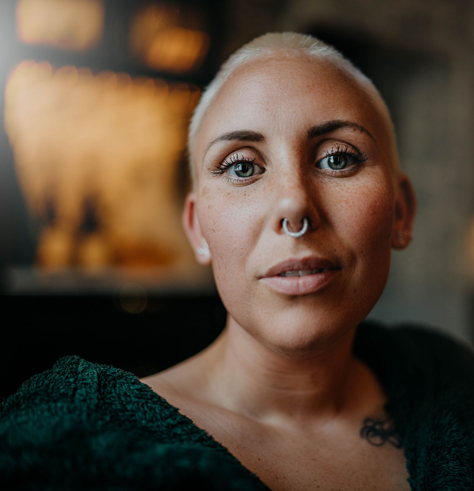
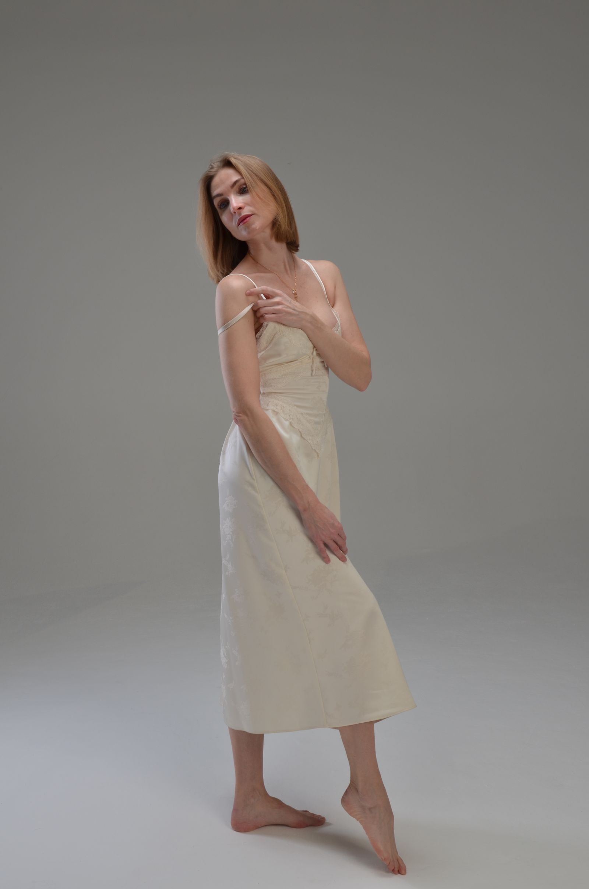
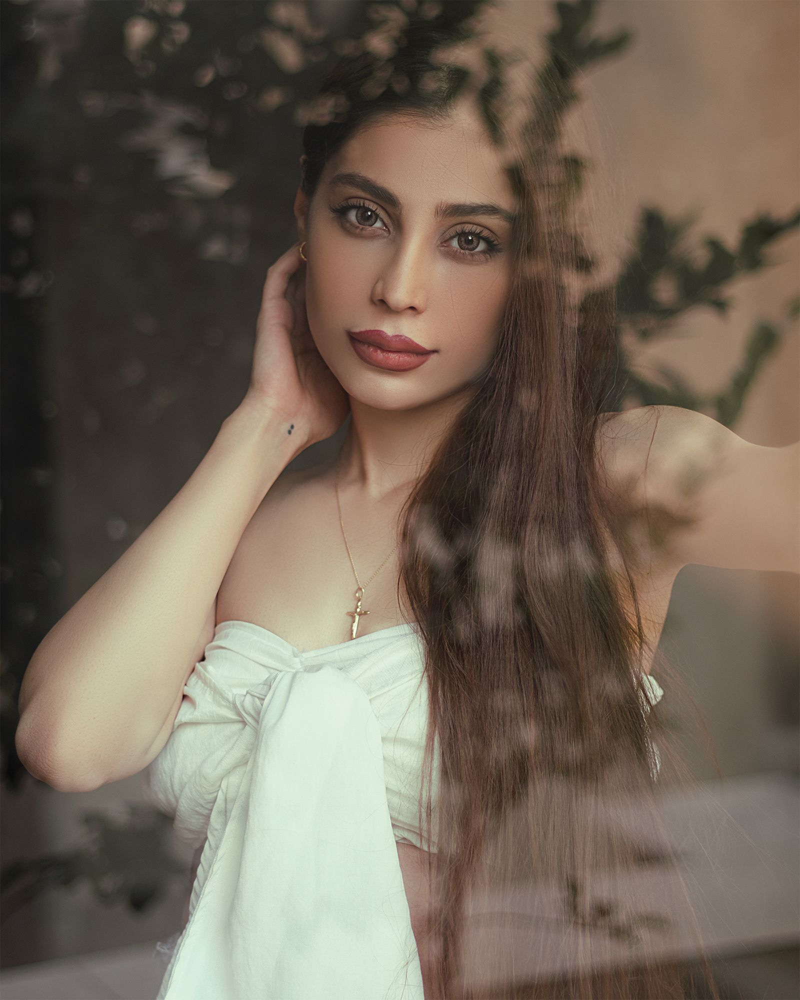
Room for everyone.
Portraits
Individual, professional and creative portraitsFamily
Connection across generationsMaternity
A record of this season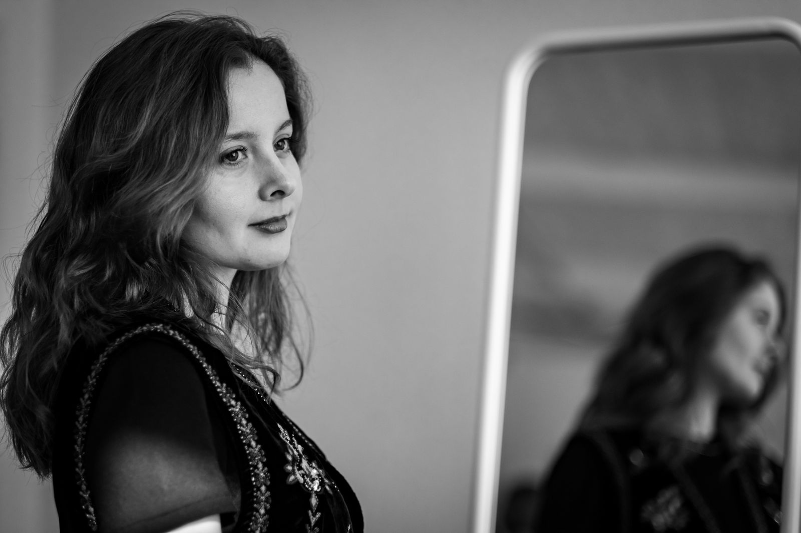
A quiet gaze.
A portrait study built around a single source of light. Small shifts in posture and expression give each frame its own rhythm.
Explore the collectionFrom first light
to final print.
Choose a session, talk through your ideas, then settle into the light. Afterward, a proof gallery brings your favorites together for editing and print.
Discover session packages
Small changes.
Different feelings.
A portrait takes shape in the conversation between light, movement and expression.
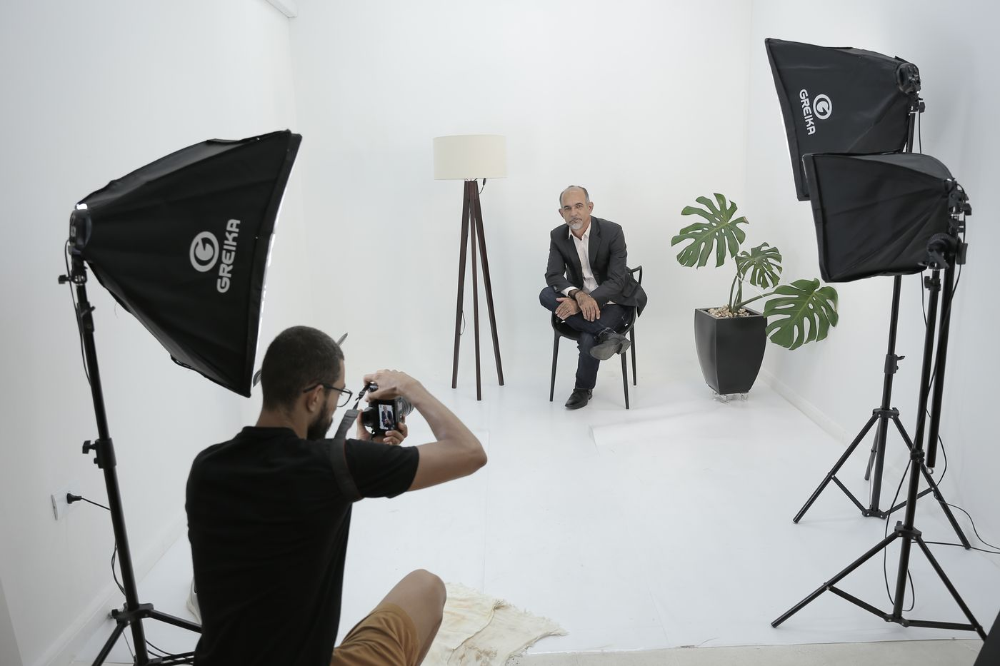
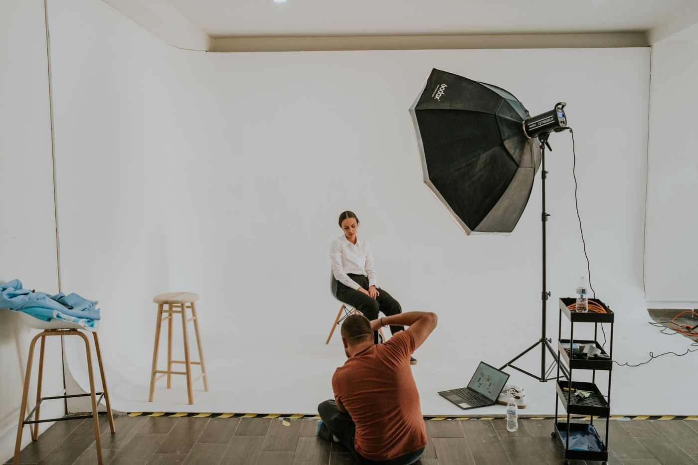
Watch the light.
Turning toward a window softens the shadows. Moving away adds definition. We use those small changes to find a frame that feels considered and comfortable.
Leave room to move.
A relaxed hand, a shift of weight, a breath between poses. Simple direction gives you something to do without holding a rigid expression.

Something to
hold on to.
A photograph finds another life on paper. Choose a favorite frame, then consider its size, finish and the place it belongs.
Explore indicative print sizes in the client dashboard, or include your print ideas with a session enquiry.